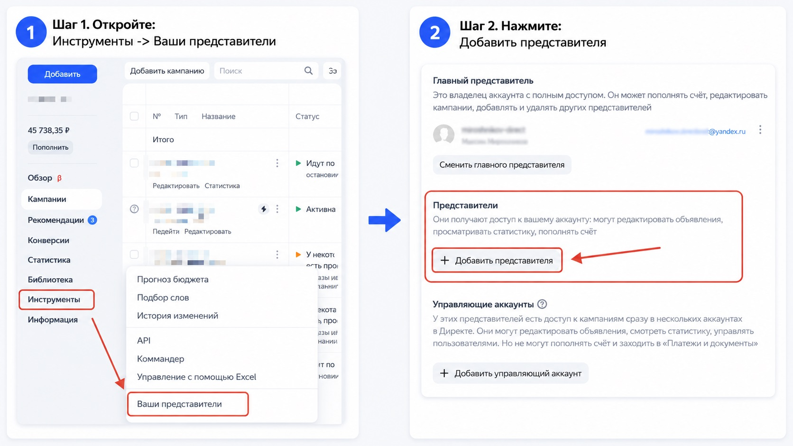

Блог о платном трафике
Как добавить представителя в Яндекс Директ
Чтобы добавить представителя в Яндекс Директ, откройте рекламный кабинет и перейдите в раздел «Инструменты» - «Ваши представители». Нажмите «Добавить представителя», укажите логин Яндекса, заполните данные пользователя и выберите уровень доступа: полный или только чтение.
Важное условие: для нового представителя нужен аккаунт Яндекса, который раньше не использовался для авторизации в Директе. Если специалист уже работает с рекламными кабинетами через свой логин, ему может больше подойти управляющий аккаунт.
Передавать сотруднику или подрядчику пароль от основного рекламного кабинета не нужно.
Как добавить представителя в Яндекс Директ
Добавление представителя занимает несколько шагов. Понадобится доступ к управлению пользователями рекламного кабинета и логин Яндекса для нового представителя.
Шаг 1. Откройте раздел «Ваши представители»
Войдите в нужный рекламный кабинет Яндекс Директа.
В левом меню выберите «Инструменты», затем откройте «Ваши представители».
На странице расположены разделы:
- Главный представитель.
- Представители.
- Управляющие аккаунты.
Для добавления обычного представителя нужен второй раздел.
Шаг 2. Нажмите «Добавить представителя»
В разделе «Представители» нажмите кнопку «Добавить представителя».
Откроется форма регистрации нового пользователя. Здесь потребуется указать его логин и контактные данные.

Шаг 3. Укажите логин Яндекса
Введите логин аккаунта Яндекса в формате login@yandex.ru.
Важно понимать разницу между логином Яндекса и адресом электронной почты. Доступ предоставляется именно учётной записи Яндекса, а не произвольному email.
Кроме того, этот логин не должен ранее использоваться для авторизации в Директе.
Если у человека уже есть рекламный кабинет Яндекс Директа, зарегистрировать его обычным представителем через прежний логин не получится. В такой ситуации можно создать отдельный аккаунт Яндекса или воспользоваться управляющим аккаунтом.
Шаг 4. Заполните данные и выберите права
Укажите персональные и контактные данные представителя, затем выберите уровень доступа:
- «Полный доступ», если специалист будет создавать и редактировать кампании.
- «Только чтение», если ему необходимы настройки и статистика без возможности вносить изменения.
После заполнения формы нажмите кнопку регистрации или сохранения, предусмотренную интерфейсом.
Новый пользователь появится в списке представителей. Теперь он сможет войти в Директ под своим логином и работать с предоставленным кабинетом в пределах назначенных прав.
Кто может добавить представителя в Яндекс Директе
В обычном рекламном кабинете управлением представителями занимается главный представитель. Он может добавлять и удалять пользователей, менять им права и назначать другого главного представителя.
Но есть важное исключение. Управляющий аккаунт с уровнем доступа «Администрирование» также может назначать представителей и изменять их права.
Разница в полномочиях следующая:
| Роль | Может добавлять представителей |
|---|---|
| Главный представитель | Да |
| Обычный представитель с полным доступом | Нет |
| Представитель с доступом на чтение | Нет |
| Управляющий аккаунт с правом «Администрирование» | Да |
| Управляющий аккаунт с правом «Редактирование» | Нет |
Если кнопка добавления недоступна, проверьте роль аккаунта, под которым вы авторизованы. Полный доступ к рекламным кампаниям сам по себе не означает, что пользователь может управлять другими представителями.
Какие права лучше выдать представителю
В Яндекс Директе у обычного представителя есть два уровня доступа: полный доступ и только чтение.
| Возможность | Полный доступ | Только чтение |
|---|---|---|
| Просмотр статистики | Да | Да |
| Просмотр настроек | Да | Да |
| Создание и изменение кампаний | Да | Нет |
| Редактирование объявлений | Да | Нет |
| Доступ к балансу и оплате | Да | Нет |
| Добавление других представителей | Нет | Нет |
Для директолога, который занимается настройкой и ведением рекламных кампаний, обычно необходим полный доступ.
Если человеку нужно только оценивать результаты рекламы, проверять настройки или готовить отчёты, достаточно режима «Только чтение».
Важный нюанс: полный доступ позволяет представителю не только изменять рекламу, но и работать с оплатой и средствами рекламного кабинета. Более того, полномочия могут распространяться на другие коммерческие сервисы Яндекса.
Поэтому полный доступ стоит предоставлять только тем специалистам, которым вы доверяете управление рекламой и финансовыми операциями.
Представитель или управляющий аккаунт: что выбрать
Представитель подходит для работы с одним рекламным кабинетом, а управляющий аккаунт удобнее специалистам и агентствам, которые ведут рекламу нескольких клиентов.
Эти способы отличаются не только количеством доступных кабинетов, но и требованиями к логину и возможностями управления.
| Критерий | Представитель | Управляющий аккаунт |
|---|---|---|
| Основное назначение | Работа в кабинете рекламодателя | Управление несколькими кабинетами |
| Требования к логину | Не использовался в Директе | Уже используется в Директе |
| Уровни доступа | Полный, чтение | Администрирование, редактирование, чтение |
| Доступ к балансу и оплате | При полном доступе | Нет |
| Управление представителями | Только у главного | При администрировании |
Например, если вы наняли штатного специалиста и создаёте для него отдельный логин, обычный представитель будет подходящим решением.
Если же подрядчик уже ведёт рекламу нескольких клиентов и использует собственный кабинет Яндекс Директа, логичнее предоставить ему доступ через управляющий аккаунт.
При этом управляющему аккаунту с правом «Редактирование» можно разрешить полноценно работать с рекламными кампаниями, не предоставляя доступа к оплате и балансу.
Подробнее этот способ разобран в отдельной инструкции: Как добавить управляющий аккаунт в Яндекс Директ.
Почему не получается добавить представителя в Яндекс Директ
Если Яндекс не принимает логин, не показывает кнопку добавления или не позволяет выбрать нужные права, сначала проверьте следующие причины.
Логин уже использовался в Директе
Одна из важных особенностей представительского доступа заключается в том, что для регистрации нового представителя нужен логин, который раньше не использовался для авторизации в Яндекс Директе.
Если специалист уже запускал рекламу через свой аккаунт, этот логин не подойдёт.
Что делать: создать новый аккаунт Яндекса для представителя. Если специалисту важно продолжать работать под своим существующим логином, рассмотреть управляющий аккаунт.
Указана почта вместо логина Яндекса
Не любой адрес электронной почты подходит для добавления представителя. Яндекс требует логин зарегистрированной учётной записи.
Что делать: уточнить логин Яндекса, проверить правильность его написания и наличие соответствующего аккаунта.
Недостаточно прав для добавления пользователя
Если вы вошли под обычным представителем, даже с полным доступом к рекламе, самостоятельно назначать новых представителей нельзя.
Что делать: авторизоваться под главным представителем или обратиться к пользователю с соответствующими административными полномочиями.
Логин зарегистрирован в Яндекс Балансе
Яндекс предусматривает отдельное ограничение: полный доступ можно выдать только логину, который не зарегистрирован в Балансе.
Что делать: проверить, не связан ли выбранный логин с Балансом. Для нового представителя с полными правами использовать подходящий аккаунт. При необходимости работать под существующим рекламным логином рассмотреть управляющий доступ.
Краткая диагностика
| Проблема | Что проверить |
|---|---|
| Не принимается логин | Регистрацию в Яндексе и предыдущую работу в Директе |
| Нет кнопки добавления | Роль текущего пользователя |
| Не получается выдать полный доступ | Регистрацию логина в Балансе |
| Специалисту нужен его рабочий логин | Возможность подключения управляющего аккаунта |
Перед повторной попыткой добавления имеет смысл проверить все условия, а не создавать несколько новых аккаунтов подряд.
Как проверить, что представитель получил доступ
После добавления пользователь должен авторизоваться в Яндекс Директе под указанным логином.
Проверить предоставленные права можно следующим образом:
- Убедиться, что доступен нужный рекламный кабинет.
- Открыть список кампаний и проверить возможность просмотра настроек.
- Перейти к статистике и убедиться, что данные отображаются.
- Если выдан полный доступ, проверить наличие инструментов редактирования кампаний.
При доступе «Только чтение» пользователь должен видеть настройки и статистику, но не иметь возможности изменять рекламные кампании.
Если нужный кабинет не появился, проверьте, под каким логином выполнен вход, и убедитесь, что именно этот пользователь присутствует в списке представителей.
Как изменить права представителя или назначить другого главным
Главный представитель может изменить уровень доступа обычного представителя через раздел «Инструменты» - «Ваши представители».
Найдите нужный логин, откройте редактирование его настроек и выберите другой уровень доступа. Учитывайте ограничения для аккаунтов, зарегистрированных в Балансе.
Если требуется передать полномочия главного представителя другому пользователю, выберите «Сменить главного представителя».
В открывшемся списке укажите одного из уже зарегистрированных представителей и нажмите «Назначить».
После смены бывший главный представитель сохраняет возможность работать с рекламными кампаниями, но теряет право управлять другими представителями.
Передавать роль главного представителя подрядчику без необходимости не стоит. Это одна из наиболее важных административных ролей рекламного кабинета.
Как удалить или восстановить представителя в Яндекс Директе
Когда сотрудничество завершилось, доступ представителя можно отозвать без изменения пароля от основного рекламного кабинета.
Для этого:
- Откройте «Инструменты» - «Ваши представители».
- Найдите нужного пользователя в разделе «Представители».
- Откройте меню действий рядом с его логином.
- Выберите «Удалить».
После удаления пользователь потеряет доступ к управлению соответствующими рекламными кампаниями и связанными коммерческими сервисами Яндекса.
Можно ли восстановить удалённого представителя?
Да, но с ограничениями.
Удалённых пользователей можно найти во вкладке «Удалённые представители».
Если представитель не успел создать собственных рекламных кампаний, Яндекс позволяет восстановить его доступ. Для этого нужно нажать «Восстановить» напротив соответствующего логина.
Если восстановление недоступно, следует проверить ограничения для данного аккаунта, а не рассчитывать, что удалённого пользователя всегда можно вернуть автоматически.
Что ещё важно знать о безопасности доступа
В Яндекс Директе количество обычных представителей одного рекламного кабинета не ограничено.
Однако важно контролировать не только количество пользователей, но и их полномочия.
Несколько практических рекомендаций:
- Не передавайте пароль от основного рекламного кабинета сотрудникам и подрядчикам.
- Для просмотра статистики используйте доступ «Только чтение».
- Не назначайте главными представителями пользователей, которым не требуется управлять доступами.
- Регулярно проверяйте список действующих представителей.
- После завершения сотрудничества своевременно удаляйте ненужные доступы.
Главный представитель получает уведомления по всем кампаниям. Обычному представителю уведомления приходят по тем кампаниям, в настройках которых указан его email.
Также учитывайте, что доступ к Директу и доступ к Яндекс Метрике настраиваются отдельно.
Если директологу предстоит анализировать поведение посетителей сайта, работать с целями и отчётами Метрики, ему может потребоваться отдельное разрешение на работу со счётчиком.
Порядок действий разобран в инструкции Как дать доступ к Яндекс Метрике.
Коротко о выборе доступа
Для обычного сотрудника или специалиста, который будет работать с одним рекламным кабинетом, достаточно представительского доступа.
Для подрядчика, который уже использует Яндекс Директ и управляет несколькими клиентскими кабинетами, обычно удобнее управляющий аккаунт.
Основное правило для бизнеса: рекламный кабинет должен оставаться под вашим контролем, а приглашённый специалист должен получать только те полномочия, которые необходимы для выполнения работы.
Если вы передаёте рекламные кампании специалисту, отдельно ознакомьтесь с тем, что входит в ведение Яндекс Директа.